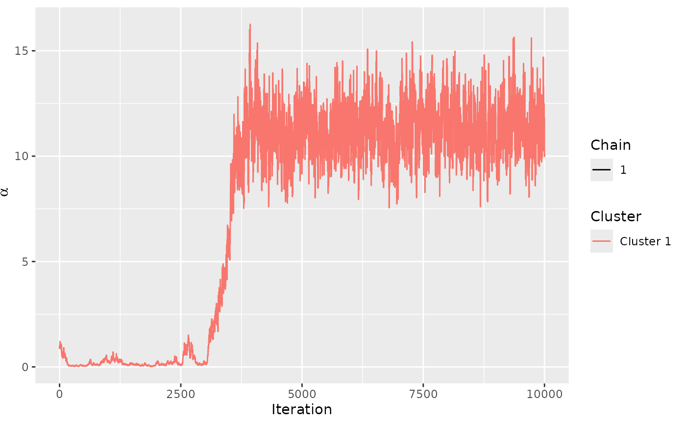
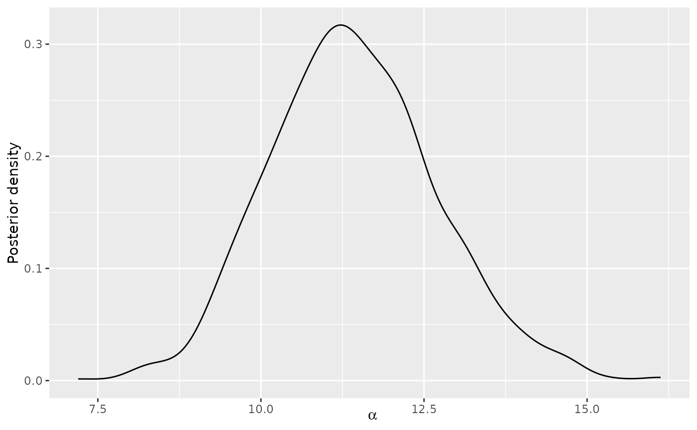

Plot posterior distributions of SMC-Mallow parameters.
Arguments
- x
An object of type
SMC-Mallows, returned for example fromsmc_mallows_new_users.- nmc
Number of Monte Carlo samples
- burnin
A numeric value specifying the number of iterations to discard as burn-in. Defaults to
model_fit$burnin, and must be provided ifmodel_fit$burnindoes not exist. Seeassess_convergence.- parameter
Character string defining the parameter to plot. Available options are
"alpha"and"rho".- time
Integer determining the update slice to plot
- C
Number of cluster
- colnames
A vector of item names. If NULL, generic names are generated for the items in the ranking.
- items
Either a vector of item names, or a vector of indices. If NULL, five items are selected randomly.
- ...
Other arguments passed to
plot(not used).
Examples
set.seed(994)
n_items <- dim(sushi_rankings)[2]
metric <- "footrule"
# Estimate the logarithm of the partition function of the Mallows rank model
logz_estimate <- estimate_partition_function(
method = "importance_sampling",
alpha_vector = seq(from = 0, to = 15, by = 0.5), n_items = n_items,
metric = metric, nmc = 1e2, degree = 10
)
# Perform the resample-move SMC algorithm
smc_test <- smc_mallows_new_users(
R_obs = sushi_rankings[1:100, ], type = "complete", n_items = n_items,
metric = metric, leap_size = floor(n_items / 5), N = 100, Time = 10,
logz_estimate = logz_estimate, mcmc_kernel_app = 5, num_new_obs = 5,
alpha_prop_sd = 0.5, lambda = 0.15, alpha_max = 1e3
)
# Plot rho
plot(smc_test, colnames = colnames(sushi_rankings), parameter = "rho")
#> Items not provided by user or more than 5 items in a ranking. Picking 5 at random.

# Plot alpha
plot(smc_test, parameter = "alpha")
